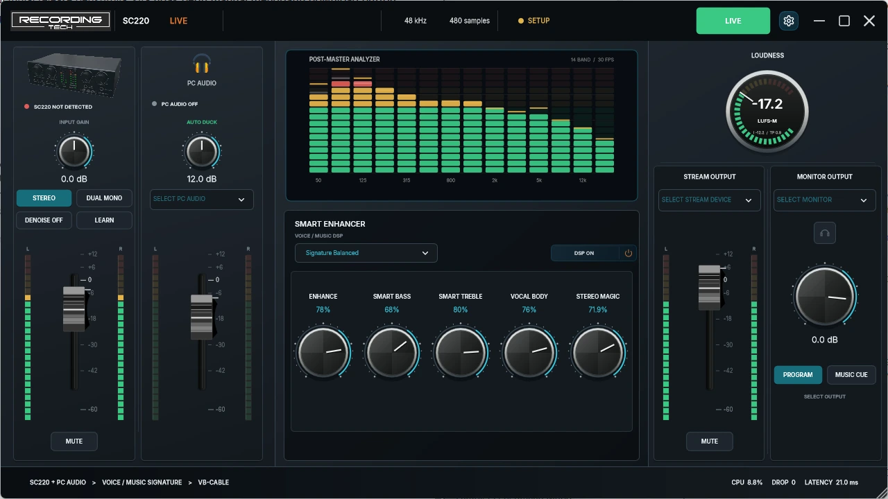

SC220 LIVE • GRATIS DICOBA
Bikin suara karaoke dan live lebih enak didengar.
Kalau Anda pakai Recording Tech SC220, SC220 Live membantu menyatukan suara dari SC220 dan audio PC dalam satu tampilan yang jelas. Atur level, rapikan karakter suara, cek meter, lalu kirim hasilnya ke OBS atau TikTok Live Studio.
Full control 365 hari
Tanpa kartu kredit
Windows 10/11 x64
SmartScreen muncul? Tenang, ada cara sederhana untuk cek file sebelum install.
SC220 Live Console READY

Native Windows appSC220 + PC audioOBS / TikTok ready
CARA KERJA
Dari suara masuk sampai siap live, urutannya sederhana.
Tidak perlu menghafal istilah audio. Ikuti empat langkah ini setiap kali: pilih sumber, atur suara, cek level, lalu kirim mix akhir ke aplikasi live.
SC220 + audio PC
Pilih Recording Tech SC220 dan sumber musik atau audio Windows yang ingin Anda gabungkan.
Seimbangkan dengan nyaman
Atur level suara dan musik, lalu gunakan ASK-P Signature bila ingin memberi karakter tambahan.
Lihat meter sebelum live
Meter membantu melihat level program dan peak supaya Anda tidak hanya mengandalkan tebakan dari telinga.
OBS / TikTok Live
Pilih stream output, lalu gunakan endpoint yang sama di OBS atau TikTok Live Studio.
YANG BISA DILAKUKAN
Yang paling sering Anda butuhkan, ada di sini.
Pilih bagian yang ingin Anda lihat. Teks dan gambar selalu menjelaskan hal yang sama, jadi tidak perlu menebak-nebak screenshot mana yang sedang dibahas.
MIX SUARA
SC220 dan musik PC tetap terpisah, jadi mudah diatur.
Anda langsung tahu fader mana untuk suara dari SC220 dan mana untuk audio PC. Keduanya bisa diseimbangkan tanpa harus mencari menu tersembunyi.
- Fader dan meter masing-masing sumber terlihat jelas
- Voice dan musik bisa diatur sendiri-sendiri
- Mix akhir tetap menuju satu output live
SC220 + PC AUDIO
VOKAL & KARAKTER
Butuh sedikit lebih hangat, terang, atau lebar? Tinggal putar kontrol utamanya.
ASK-P Signature merangkum kontrol kreatif ke beberapa macro yang mudah dikenali, jadi Anda tidak harus membuka puluhan parameter DSP.
- Enhance, Smart Bass, Smart Treble, Vocal Body, Stereo Magic
- Cocok untuk penyesuaian cepat saat karaoke atau live
- Mudah kembali ke titik awal yang masuk akal
ASK-P SIGNATURE
LEVEL & PEAK
Sebelum live, lihat dulu apakah levelnya sehat.
Loudness dan peak meter memberi gambaran visual cepat. Kalau mix terlalu panas, Anda bisa menurunkannya sebelum audiens mendengarnya pecah.
- Peak stereo mudah terlihat
- Level program lebih mudah dipantau
- Cek dulu, baru tekan GO LIVE
LOUDNESS + PEAK
ROUTING WINDOWS
Nama device dibuat mudah dikenali saat masuk ke OBS atau TikTok.
SC220 Live menampilkan nama endpoint Windows secara langsung. Ini membantu mencocokkan sumber dan output tanpa terlalu banyak trial-and-error.
- Nama endpoint Windows terlihat apa adanya
- Lebih mudah mencocokkan source dan stream output
- Cocok untuk workflow VB-CABLE
WINDOWS ENDPOINTS
SEBELUM INSTALL
SmartScreen muncul? Itu bisa terjadi.
Windows kadang memberi peringatan pada aplikasi yang masih baru atau belum banyak diunduh. Jangan abaikan warning begitu saja—pastikan Anda mengunduh dari halaman resmi ini dan, bila ingin ekstra yakin, cocokkan SHA-256 installer.
Tombol download menuju asset release resmi project.
Pastikan versinya sama dengan rilis stabil yang tampil di halaman.
Hash resmi tersedia dan bisa disalin di bagian download.
Baru lanjut ketika sumber dan file yang diterima sudah sesuai.
Apa arti peringatan SmartScreen?
SmartScreen memakai reputasi aplikasi dan publisher sebagai salah satu sinyal. Software yang masih baru atau belum banyak diunduh dapat memunculkan warning. Warning tersebut bukan bukti bahwa file pasti berbahaya ataupun pasti aman—karena itu sumber resmi dan verifikasi file tetap penting.
INSTALASI MUDAH
Empat langkah, lalu Anda bisa mulai mencoba.
Tidak perlu hafal istilah teknis. Ikuti alurnya dari installer, pilih sumber suara, pilih output, lalu sambungkan ke aplikasi live.
Download installer →- 01
Download dan install
Gunakan installer resmi di halaman ini. Bila SmartScreen muncul, cek sumber dan SHA-256 sebelum melanjutkan.
- 02
Pilih SC220 dan audio PC
Pilih Recording Tech SC220 serta sumber playback Windows yang membawa musik atau audio dari PC.
- 03
Pilih Stream Output
Gunakan CABLE Input sebagai tujuan mix akhir bila setup Anda menggunakan VB-CABLE.
- 04
Hubungkan ke aplikasi live
Di OBS atau TikTok Live Studio, pilih CABLE Output atau endpoint yang sesuai untuk mix akhir.
LISENSI YANG JELAS
Coba full control 365 hari. Tanpa kartu kredit.
Anda bisa mencoba seluruh workflow tanpa memasukkan data pembayaran dan tanpa tagihan otomatis saat masa full control selesai.
SETELAH 365 HARI
Fungsi audio utama tetap bekerja
Routing, fader, meter, mute, dan ducking tetap aktif. Kontrol kreatif tertentu menjadi read-only.
OFFICIAL DOWNLOAD
Mau coba? Mulai dari installer resmi.
Unduh rilis Windows x64 terbaru. Versi, tanggal publikasi, dan SHA-256 ditampilkan di samping tombol supaya Anda tahu persis file yang sedang dipakai.
Full control 365 hariTanpa kartu kreditSHA-256 tersedia
Versiv0.1.2
PlatformWindows x64
Diterbitkan14 Agustus 2026
SHA-256
ba6c61617d8c796dd953234e50f6d2e179c5efbe5e281892da7e7ba977e55693SEBELUM MENGUNDUH
Yang perlu disiapkan.
- OSWindows 10 atau 11, 64-bit
- HardwareRecording Tech SC220
- RoutingStandard VB-Audio VB-CABLE
- BroadcastOBS, TikTok Live Studio, atau aplikasi kompatibel
PERTANYAAN YANG SERING MUNCUL
Jawaban singkat, tanpa muter-muter.
Benarkah SC220 Live gratis dicoba?
Ya. Full control tersedia selama 365 hari tanpa kartu kredit dan tanpa tagihan otomatis. Setelah itu, fungsi audio utama tetap tersedia sementara kontrol kreatif tertentu menjadi read-only.
Kenapa Windows SmartScreen bisa muncul?
SmartScreen memakai reputasi aplikasi dan publisher sebagai salah satu sinyal. Aplikasi yang masih baru atau belum banyak diunduh bisa memunculkan warning. Pastikan download berasal dari halaman resmi ini dan cocokkan SHA-256 bila Anda ingin memverifikasi file.
Apakah SC220 Live software karaoke?
SC220 Live adalah mixer dan audio console untuk live streaming. Aplikasi ini tidak mengelola katalog lagu atau menampilkan lirik karaoke.
Apakah harus memakai OBS?
Tidak. Aplikasi Windows lain yang menerima endpoint audio juga bisa digunakan.
Apa fungsi VB-CABLE?
VB-CABLE membawa hasil mix dari SC220 Live menuju aplikasi siaran.
Perlu bantuan setup SC220 MKII?
Lihat wiring, gain staging, endpoint Windows, driver, dan checklist troubleshooting.
Buka panduan SC220 MKII →Sedang mencari informasi KTV Pro K500?
Ada halaman terpisah supaya fungsi karaoke processor tidak tercampur dengan fungsi SC220 Live.
Buka panduan KTV K500 →